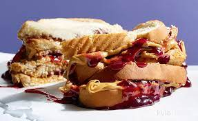

Peanut Butter and Jelly

Description
The peanut butter and jelly sandwich (casually known
as the pb and j) is an American classic. Mom's from
sea to shining sea have been serving up these bad boys
and putting smiles on kids faces since the pioneer days, baby,
and I'm going to lay out the deets you need to make a pb and j of
your very own. No mother required.
Ingredients
Steps
-
Slap a piece of bread down right in front of you.
-
Grab hold of a knife, plunge it into the peanut butter, and
kinda swirl it around until you've got a nice, big glob of the
stuff on your utencil.
-
Spread that sweet, sweet goop all the way to the outer
edges of your bread.
-
You more or less do the same thing with the jelly that you
just did with the peanut butter, except I find it more effective
to sort of tip the jar of jelly over the bread and do a bit of a
scooping motion to slop the jelly down. Maybe use a spoon.
-
Finally, smoosh the other piece of bread right on top and viola!
You have your very own peanut butter and jelly sandwich!
-
Optional last step. Repeat the process to build a double decker.
Thank me later.